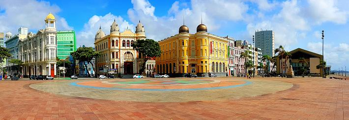

O Marco Zero do Recife é um local histórico localizado na praça Rio Branco, no bairro do Recife, em Recife, Pernambuco, Brasil. É considerado o ponto inicial da cidade, onde foi erguido um marco de pedra no século XVI para indicar o ponto de referência a partir do qual todas as distâncias da cidade seriam medidas.
Clique aqui para conhecer outros pontos turísticos do Recife Antigo.